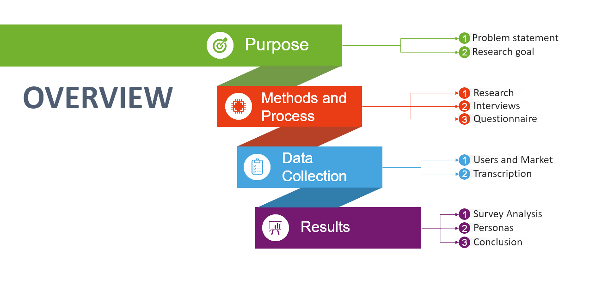
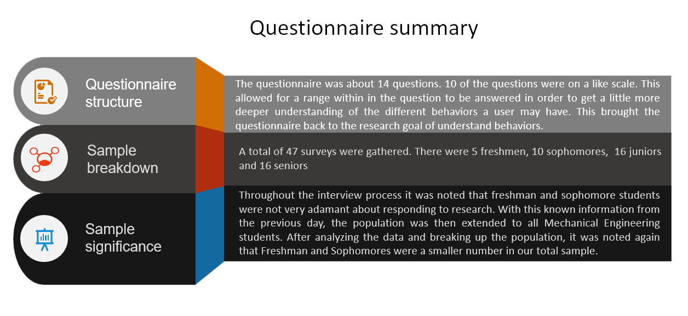

As students move forward in school they have a hard time developing affective study skills, managing their time, and seeking better advice, leaving students behind academically and unsure about their direction in their major
{kind=link}
Research
METHOD OVERVIEW
{kind=link}
CONSIDERATION

SURVEY
{kind=link}
1. It was noted that as year increases student’s social self confidence increases as well
2. Students find difficulty in managing time in their second year but recover fairly well in their junior year
3. Student’s ease of developing study skills decreases over the years and their difficulty in adjusting to academic demands increased slightly
AFFINITY DIAGRAM

PERSONA
Conceptual Design
SCENARIO

Conceptual design was used to create key components of the website such as about, gallery, contacts etc to generate multiple ideas. This phase is usually done using paper and pencil, we explored different possibilities for behaviour as well as some visceral concepts of the design. This was subjected to cognitive-walkthrough
SKETCHES

INFORMATION ARCHITECTURE

PROTOTYPE
{kind=link}
{kind=link}
COGNITIVE WALKTHROUGH


The cognitive walkthrough leads to the evaluation of steps by the designer to find any potential design issues. Call it unit testing if you will, this is powerful when combined with usability testing as well.
TAKEAWAY
After studying formally the methods of qualitative research methods, I understood that affinity diagraming closely relates to grounded theory. In simple terms, thematic analysis and emerging theory analysis.
This is a very powerful tool, and makes such a complicated data easy to deduce and extract the persona of interest. "About Face" book by Alan Cooper was very instrumental
in keeping up with methods properly. Drafting Personas was something I enjoyed dearly. This the most valuable gift of Human-Centered Design, rather
the manifestation of this scientific method itself.
It is easy to lose focus on the main goal while in the heat of the design. HCDD is extrmemly powerful design method, only if its made use of in a
proper way. Neglegence and misinterpretation of the method could result in extremely flawed design. The major emphasis is always on vision statement which
helps us keep track of the goal. The reason why we are designing lies with this. "Magic"
is the key concept here. While we are designing we might
encounter with a concept which is absolotely not feasible on first thought, but finish the concept and take a look back at it, believe it is magic and that is
key to success.
TOOLS
Powerpoint, Balsamiq, Visio, Photoshop, Autodesk SketchPro, Excel, SPSS for statistical analysis